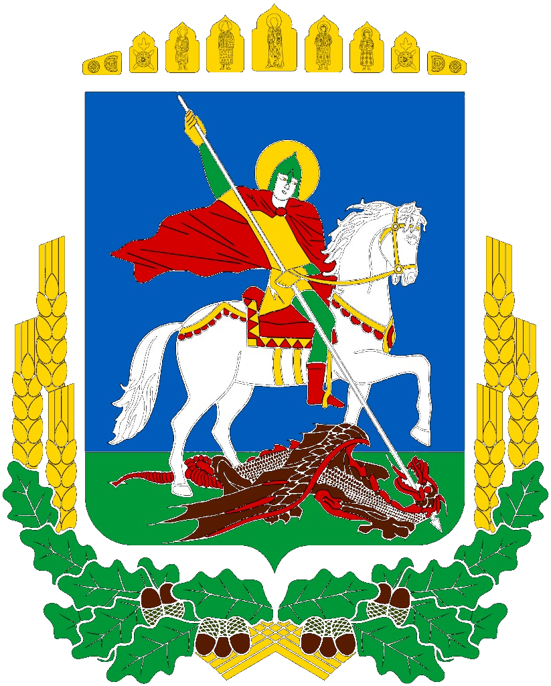

Для PDF: Друк → Принтер «Зберегти як PDF» → альбомна, поля «немає», фон увімкнено.
Додаток · робоча група
Телефон каже звичайній людині, що робити в перші хвилини. Кличемо 25 людей подивитися і сказати: так, можна йти в тести.

За підтримки Київської обласної військової адміністрації
01 · Суть
великі кнопки · так / ні
Як працює
читає те саме, що написано
кнопка виклику завжди на екрані
Навіщо
До приїзду допомоги часто 20–30 хвилин. Додаток веде свідка: одна дія, потім наступна.
Звідки правила
Беремо чинні правила допомоги. На екрані — звичайна мова, не підручник.
Що зробити зараз: тиснути на рану, відійти, набрати 112.
Короткий звіт: де, що сталось, скільки людей. Читають з екрана або QR.
Вогонь, завал, підозрілий предмет — відійти. Спершу до того, хто мовчить.
Запрошення
подивитися додаток і сказати, чи так можна
подивитися тести і погодити результат
Кого кличемо
По одному від служби або установи.
Ролі
Тести
Міряємо час до першої правильної дії. Спостерігач мовчить, доки людина не збирається зробити небезпечне.
Вагон або перон Укрзалізниці. Тісно, багато людей.
Аварія на дорозі. Салон, запах пального, мало місця.
Віддалена громада. Слабкий зв’язок. Місце словами.
Під’їзд, щільна забудова. Мало виходу.
Сцени
Як тестуємо
Спочатку стіл, потім звичайні люди, потім служби на місці.
Група дивиться екрани. Каже: так, можна кликати людей.
Звичайні люди без підготовки проходять сцени. Служби мовчать.
Патруль, ДСНС, ЕМД читають звіт без пояснень.
Ціль тестів
Чи людина робить правильну першу дію. Чи служби розуміють звіт.
Усі 25 кажуть «так» або пишуть, що змінити в тексті.
Один аркуш на кожну людину. Одна таблиця по сценах.
Зрозуміли екран за 20 секунд. Диспетчер почув потрібне.
Позитивний результат
Людина тисне на рану, відходить від небезпеки, іде спочатку до мовчазного. Служби читають звіт самі. Без цієї згоди тести далі не йдуть.
За підтримки Київської обласної військової адміністрації